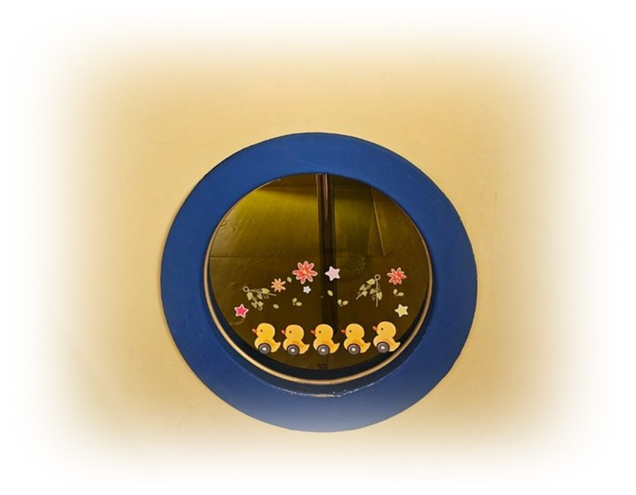

1. 아동기 수면에 드러나는 정서 조절의 과정
아동기의 잠은 겉으로 보기에는 영유아기에 비해 안정되어 보이지만, 심리적으로는 가장 많은 변화가 축적되는 시간이다. 이 시기의 아동들은 낮 동안 학교와 가정, 또래 집단이라는 확장된 사회 환경 속에서 다양한 정서 경험을 겪고, 그 여파는 밤의 잠으로 이어진다.
부모와 교사는 아동기의 수면 문제를 생활 습관이나 훈육의 문제로 해석하기 쉽지만, 발달심리학적 관점에서 보면 잠은 아동이 경험한 하루를 정서적으로 정리하고 자아를 재구성하는 핵심 공간이다. 따라서 아동기의 잠을 이해한다는 것은 단순히 “잘 자는가”를 점검하는 일이 아니라, 아동이 현재 어떤 정서적·발달적 과제를 안고 있는지를 읽는 과정이라 할 수 있다.
이 글은 브런치북(https://brunch.co.kr/@205593d149c84b6/3) 『감정도 잠이 필요하다』 2부 2장 〈아동기: 안정과 불안이 교차하는 밤〉에 해당하는 내용으로, 아동기의 수면을 정서 조절과 자아 형성의 장면으로 바라본다. 잠자리에 들기 전 나타나는 불안과 각성이 낮 동안의 관계 경험 및 자기 평가와 어떻게 연결되는지를 중심으로 살펴본다.

2. 아동기의 발달 과제와 수면의 역할
아동기는 자아 개념이 본격적으로 형성되는 시기로, 아동은 자신을 타인과 비교하고 평가받는 경험을 통해 점차 ‘나는 어떤 사람인가’를 인식하게 된다. Erik Erikson의 심리사회적 발달 이론에 따르면, 이 시기는 근면성 대 열등감의 단계로, 성취 경험과 실패 경험이 동시에 축적된다. 낮 동안 억제되거나 충분히 표현되지 못한 감정은 밤이 되면 잠들기 어려움, 악몽, 잦은 각성 등의 형태로 나타날 수 있다. 즉, 아동기의 수면은 단순한 휴식이 아니라, 자아 평가와 정서 조절이 재편성되는 심리적 장면이다.
3. 정서 조절과 밤의 불안
아동기는 낮에는 비교적 성숙한 모습을 보이지만, 밤이 되면 다시 보호를 필요로 하는 상태로 돌아간다. 이는 정서 조절 능력이 아직 완전히 내면화되지 않았기 때문이다. Jean Piaget의 인지발달 이론에 따르면, 이 시기의 아동은 구체적 조작기에 해당하며 논리적 사고가 발달하지만, 감정 처리에서는 여전히 상황 의존적 특성을 보인다. 낮 동안의 긴장과 불안은 잠자리에 들면서 구체적인 걱정이나 두려움으로 떠오르며, 혼자 잠들기 어려움이나 반복적인 확인 행동으로 표현되기도 한다. 이러한 반응은 퇴행이 아니라, 정서적 안전을 다시 확보하려는 발달적 시도로 이해될 필요가 있다.
4. 또래 관계, 학습 경험과 수면의 연관성
아동기의 수면은 학교생활과 밀접하게 연결되어 있다. 또래 관계에서의 갈등, 교사의 평가, 학업 성취에 대한 압박은 아동의 정서 상태에 직접적인 영향을 미친다. 수면 중 악몽이나 입면 곤란은 종종 낮 동안의 관계 스트레스와 연결되어 나타난다. 이때 수면 문제를 독립적으로 다루기보다, 아동이 어떤 사회적 경험을 하고 있는지 함께 살펴보는 접근이 중요하다. 잠은 아동이 하루 동안 경험한 관계와 감정을 통합하는 공간이기 때문에, 수면의 변화는 학교 적응 상태를 이해하는 중요한 단서가 된다.
5. 교육·상담 장면에서의 실천적 이해
교육 및 상담 현장에서 아동기의 수면 문제를 다룰 때, “혼자 자야 한다”거나 “이제는 울면 안 된다”는 기준은 오히려 불안을 강화할 수 있다. 발달심리 관점에서는 아동기의 잠을 독립의 완성 단계로 보기보다, 정서적 자율성이 형성되는 과도기로 이해한다. 안정적인 수면을 돕기 위해서는 규칙적인 일상 구조와 더불어, 아동이 자신의 감정을 말로 표현할 수 있는 기회를 충분히 제공하는 것이 중요하다. 잠들기 전의 대화, 하루를 돌아보는 시간은 정서 조절 능력을 키우는 교육적 장치로 기능한다.
결론
아동기의 잠은 안정과 불안이 교차하는 발달의 현장이다. 이 시기의 수면은 낮 동안 형성된 자아 개념과 정서 경험을 정리하며, 아동이 다시 다음 날의 사회적 역할로 나아갈 수 있도록 돕는다. 수면 문제는 종종 통제의 대상으로 오해되지만, 실제로는 아동의 정서 상태와 발달 과제를 가장 정직하게 드러내는 신호이다. 아동기의 잠을 발달적 맥락에서 이해할 때, 부모와 교사는 아동의 불안을 줄이고 자율적 정서 조절 능력을 지지하는 방향으로 개입할 수 있다. 결국 잘 자는 아동은, 낮 동안의 경험이 안전하게 정리될 수 있었던 아동이라 할 수 있다.
"아동기의 잠은 낮 동안 경험한 정서와 자아를 정리하는 심리적 공간이다."
참고문헌
Erik Erikson(1968). Identity: Youth and Crisis. New York: Norton.
Jean Piaget(1972). The Psychology of the Child. New York: Basic Books.
정옥분 (2020). 『발달심리학』. 서울: 학지사.
김수영 (2019). 『아동의 정서발달과 적응』. 서울: 공동체.
이영환·조복희 (2018). 『아동발달의 이해』. 서울: 학지사.
2025.08.12 - [이론] - 로렌츠의 각인 이론, 결정적 시기의 정서발달과 자기개념 형성
로렌츠의 각인 이론, 결정적 시기의 정서발달과 자기개념 형성
1. 로렌츠의 사상콘라트 로렌츠(Konrad Lorenz, 1903∼1989)는 오스트리아 출신의 동물행동학자(ethologist)로, 현대 비교행동학(비교심리학)의 기초를 확립한 학자 중 한 사람이다. 그는 니콜라스 틴베르
think-sis.co.kr
2025.08.11 - [이론] - 반두라의 사회학습이론 : 아동의 관찰은 모델은 부모가 최고!
반두라의 사회학습이론 : 아동의 관찰은 모델은 부모가 최고!
1. 사회학습이론의 의의반두라(Albert Bandura, 1925∼ )는 캐나다 출신의 세계적인 심리학자로, 1953년부터 미국 스탠퍼드대학교 심리학과 교수로 재직하며 현대 심리학의 여러 분야에 지대한 영향을
think-sis.co.kr